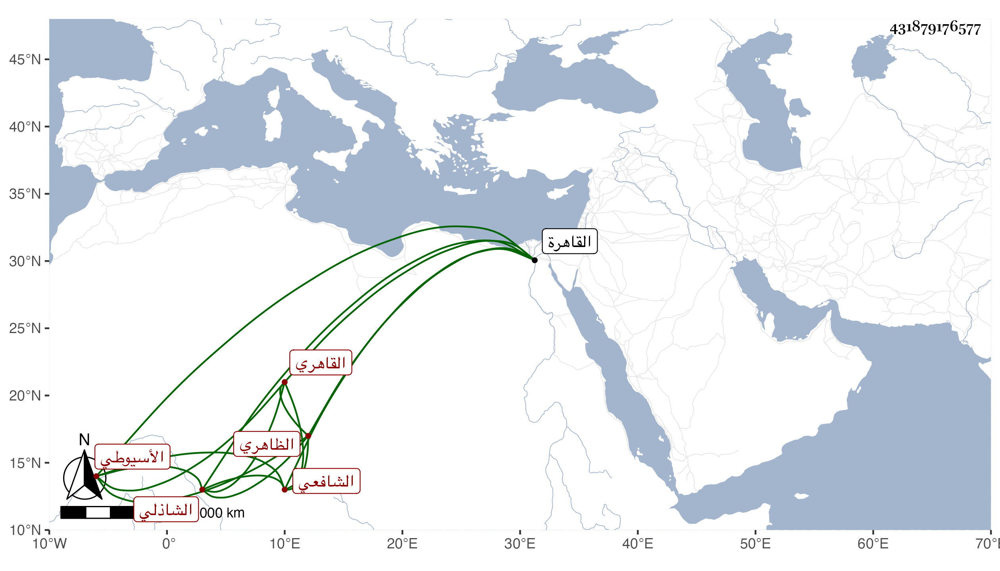

0902Sakhawi.DawLamic.ITO20230111-ara1.EIS1600.431879176577
Biography ID: 431879176577
989
يحيى بن عبد القادر بن محمد بن عبد الوهاب الشرف الأسيوطي الأصل القاهري الظاهري نسبة للظاهرية القديمة الشافعي الشاذلي سبط الشمس النحريري ولذا يعرف بالنحريري . ولد بالظاهرية القديمة ونشأ بها فحفظ القرآن وجل المنهاج واشتغل فيه على البدر حسن الأعرج والسنتاوي واشتغل بتعليم الأبناء وبالنساخة وصحب المتصوفة ، وحج وجاور سنة سبع وتسعين وقرأ على السيد عبد الله في المنهاج وعلى القول البديع وغيره من تصانيفي من نسخ كتبها بخطه بل وأخذ عني بالقاهرة أشياء ، وهو ساكن قانع في رفد أخيه وأبيهما .
